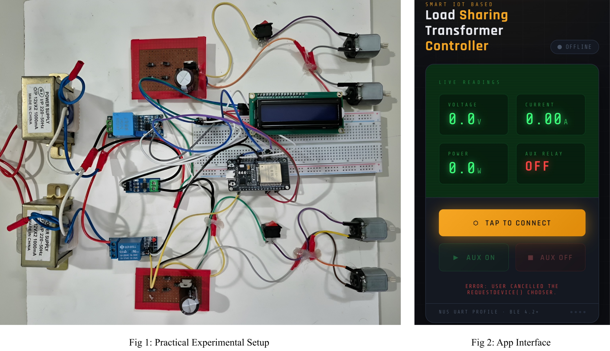
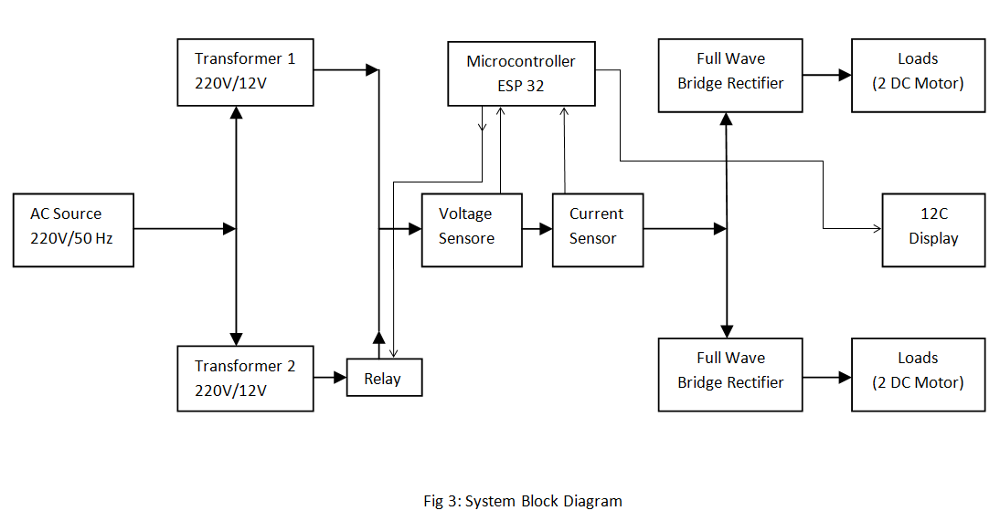

A Smart IoT-Based Automatic Load Sharing Transformer System
Department of Electrical & Electronic Engineering (EEE)
Rajshahi University of Engineering & Technology (RUET)
Project Members:
1. Md. Murad Mia (ID: 2201139)
2. Md. Mehadi Hasan Emon (ID: 2201140)
3. Mahin (ID: 2201141)
Experimental Setup & App Interface:

Abstract:
This project presents a Smart IoT-Based Automatic Load-Sharing Transformer System designed to improve transformer reliability and utilization. An ESP32 microcontroller continuously monitors voltage, current, and power using sensors. When the main transformer approaches its predefined load limit, an auxiliary transformer is automatically connected to share the load. IoT integration enables real-time remote monitoring and control, helping prevent overloading, reduce overheating, improve efficiency, and ensure reliable power delivery.
Project Background:
Distribution transformers often face uneven and fluctuating loads, causing overloading, overheating, efficiency loss, and reduced lifespan. Conventional load management depends largely on manual intervention and offers limited real-time monitoring. This project develops a Smart IoT-Based Automatic Load-Sharing Transformer System that continuously monitors load conditions and automatically shares excess load between transformers, improving reliability, operational efficiency, transformer protection, and reducing the risk of unexpected power interruptions.
Objectives:
- To design an automatic transformer load-sharing system.
- To automatically transfer excess load using relays.
- To improve transformer reliability and power supply continuity.
Required Components:
- Two Center Tap Transformer
- Two Full Wave Bridge Rectifier
- Current Sensor - ACS 712
- Voltage Sensor - ZMPT101b
- Relay Module
- ESP32
- I2C Display
- Loads (Motors)
System Block Diagram:

Methodology:
- Two 230/12 V transformers were connected as the main and auxiliary transformers, and the load was controlled through an ESP 32-based relay switching system.
- Load voltage and current were measured using ZMPT101B voltage and ACS712 current sensors, respectively.
- Two full-wave bridge rectifiers and voltage regulator were used to obtain a regulated DC supply for the control circuit.
- Four motors were used as prototype loads, with load conditions varied using switches.
- When the load exceeded the predefined threshold, the auxiliary transformer was automatically activated through the relay.
- Voltage, current, power, and transformer status were displayed on an LCD and monitored/controlled wirelessly through Bluetooth using an IoT interface.
Results and Discussion:
The developed system was successfully tested under different load conditions. At normal load, Transformer-1 supplied both loads with stable 12 V output. When the total power exceeded the predefined 6.5 W threshold, the ESP-32 activated the relay and transferred one load to Transformer-2. Stable relay switching and continuous load operation were observed. The results demonstrated that automatic load sharing effectively reduced transformer overloading and improved system reliability and continuity of power supply.
Future Scope:
- Integration of advanced smart grid algorithms for adaptive load management.
- Replacement of relay switching with solid-state devices for faster response.
- Expansion to multi-transformer systems with cloud-based analytics and AI prediction.
References:
- M. H. Rashid, Power Electronics: Circuits, Devices and Applications, 4th edition.
- ESP32 Datasheet, Espressif Systems.
- IoT-based energy monitoring and smart grid research papers (IEEE Transactions on Power Systems).